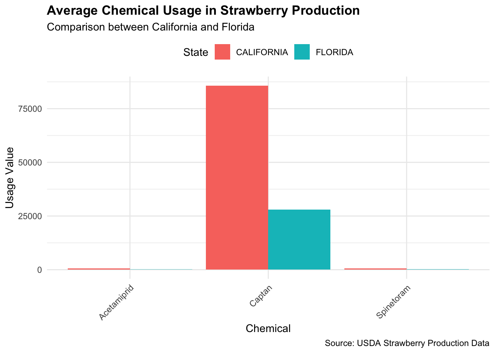
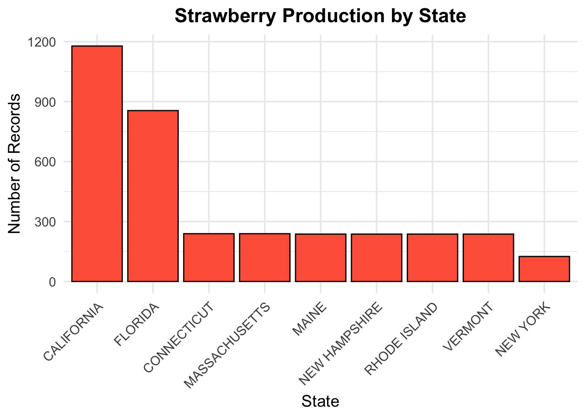
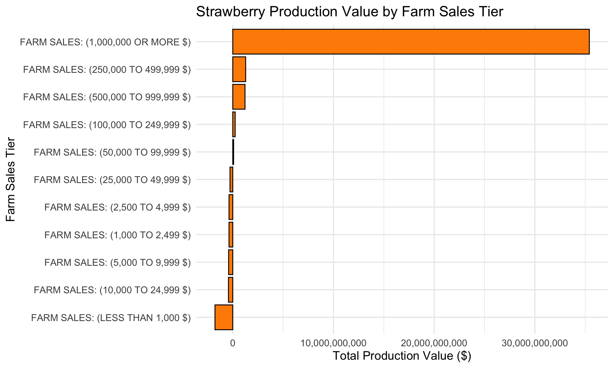
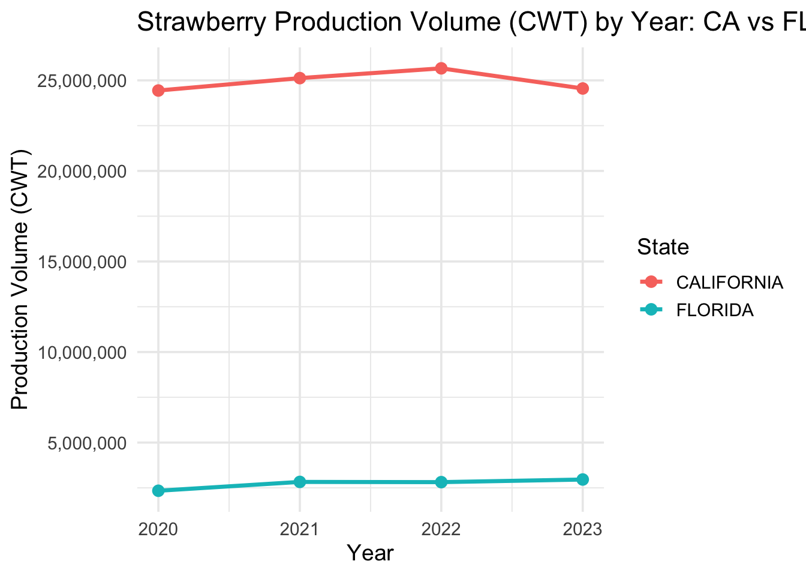
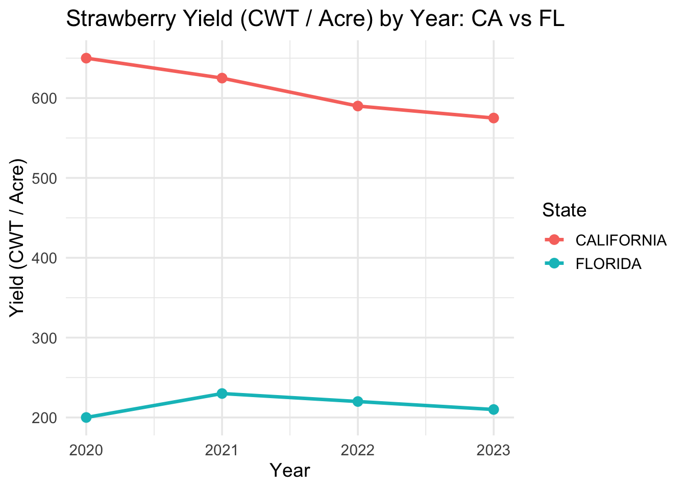
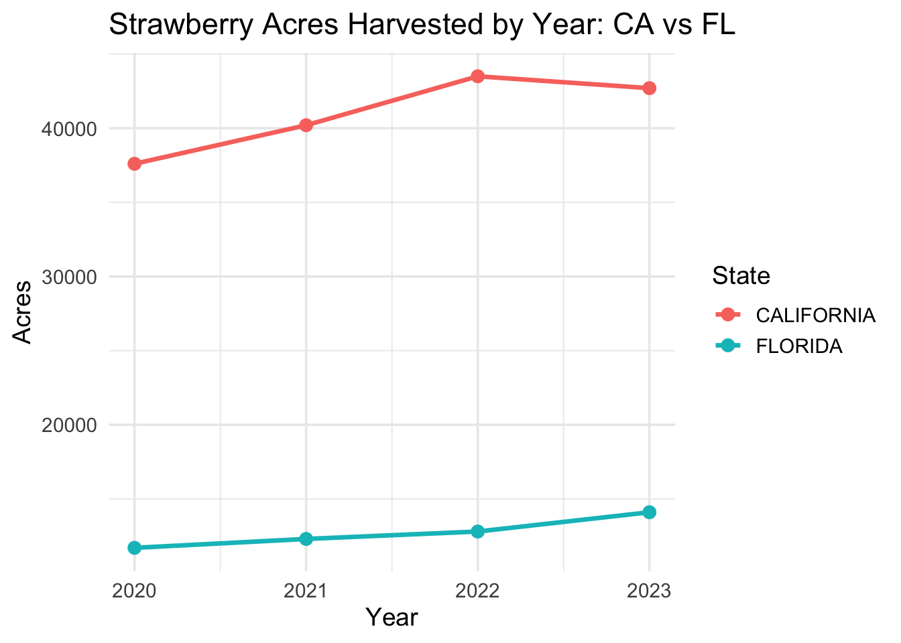
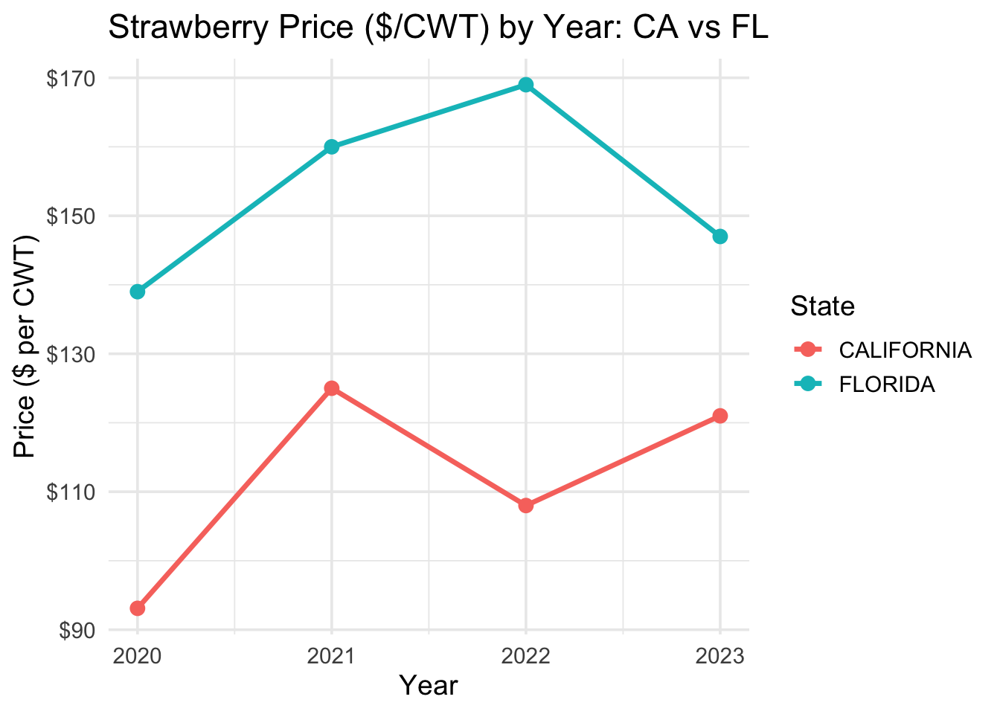
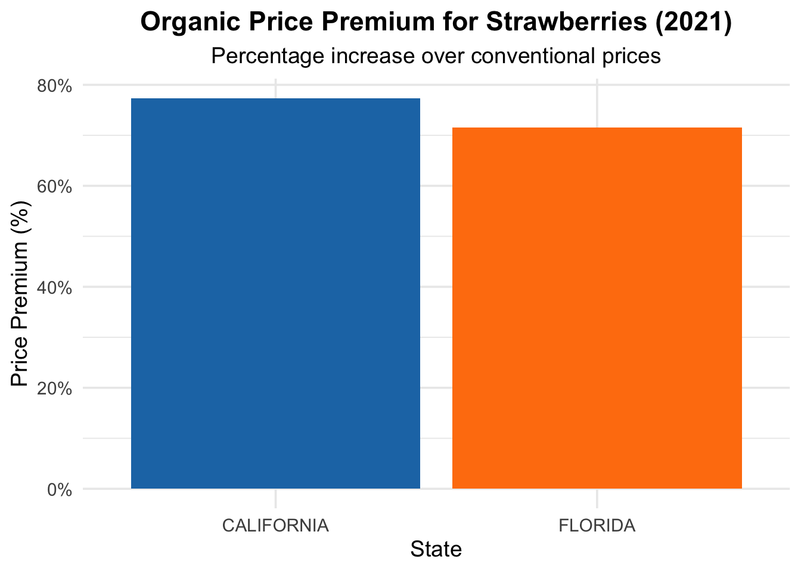

The dataset contains strawberry farming data with details about conventional and organic cultivation.
Objective
Pick three chemical treatments used for conventional strawberries in both states and contrast their use. Try to find chemicals with divergent use patterns between the states. Produce, tables, plots, and descriptions of the chemicals, how they are used, and how their use differs between California and Florida.
Compare the production and sales of organic and conventional strawberries and strawberries sold for processing. Show differences in price and volume between California and Florida. How do price, cost, and volume relationships change over the years?
Attaching package: 'scales'
The following object is masked from 'package:purrr':
discard
The following object is masked from 'package:readr':
col_factor
library(tidyr)
Question 1:
Methodology
This analysis used USDA survey data from 2021-2023 to compare the application of chemical treatments in conventional strawberry production between California and Florida. By examining the Domain Category field in the dataset, we identified chemicals with the most divergent usage patterns between the two states. The analysis focuses on three chemicals that show particularly distinct usage patterns:
Captan (fungicide)
Spinetoram (insecticide)
Acetamiprid (insecticide)
# Chemical Treatment Analysis for Strawberries# Comparing usage patterns between California and Florida# Read the data filestrawberry <-read_csv("strawb_mar6.csv", col_names =TRUE,show_col_types =FALSE)# Filter for chemical data in California and Floridachem_data <- strawberry %>%filter( State %in%c("CALIFORNIA", "FLORIDA"),grepl("CHEMICAL", Domain) ) %>%# Extract chemical names and codes from Domain Categorymutate(ChemicalName =case_when(grepl("CAPTAN = 81301", `Domain Category`) ~"Captan",grepl("SPINETORAM = 110007", `Domain Category`) ~"Spinetoram",grepl("ACETAMIPRID = 99050", `Domain Category`) ~"Acetamiprid",TRUE~NA_character_ ) ) %>%# Keep only our target chemicalsfilter(!is.na(ChemicalName)) %>%# Clean up Value column - remove commas and convert to numericmutate(Value =as.numeric(gsub(",", "", Value)),# Create a clean chemical type variableChemicalType =case_when(grepl("FUNGICIDE", Domain) ~"Fungicide",grepl("INSECTICIDE", Domain) ~"Insecticide",grepl("HERBICIDE", Domain) ~"Herbicide",grepl("OTHER", Domain) ~"Other Chemical",TRUE~"Unknown" ) )
Warning: There was 1 warning in `mutate()`.
ℹ In argument: `Value = as.numeric(gsub(",", "", Value))`.
Caused by warning:
! NAs introduced by coercion
# Function to check if data contains (D) values, which indicate disclosure concernshas_disclosure_issues <-function(data) {any(grepl("\\(D\\)", data$Value))}# Check if we have disclosure concernsif(has_disclosure_issues(chem_data)) {cat("Note: Some values contain (D), indicating they are withheld for disclosure concerns.")}# Summarize chemical usage by state, year, and chemicalchem_summary <- chem_data %>%group_by(State, Year, ChemicalName, ChemicalType) %>%summarize(AvgValue =mean(Value, na.rm =TRUE),.groups ="drop" )# Create tables showing usage by state and yearstate_chem_table <- chem_summary %>%pivot_wider(names_from = Year,values_from = AvgValue,names_prefix ="Year_" ) %>%arrange(ChemicalName, State)# Calculate overall averages by chemical and statestate_chem_avg <- chem_summary %>%group_by(State, ChemicalName, ChemicalType) %>%summarize(AvgUsage =mean(AvgValue, na.rm =TRUE),.groups ="drop" )# Create a wide format table for comparisonstate_comparison <- state_chem_avg %>%pivot_wider(names_from = State,values_from = AvgUsage ) %>%mutate(Difference = CALIFORNIA - FLORIDA,PercentDiff = (Difference / ((CALIFORNIA + FLORIDA)/2)) *100 )# Create plot for chemical comparison between statesggplot(state_chem_avg, aes(x = ChemicalName, y = AvgUsage, fill = State)) +geom_bar(stat ="identity", position =position_dodge()) +labs(title ="Average Chemical Usage in Strawberry Production",subtitle ="Comparison between California and Florida",x ="Chemical",y ="Usage Value",fill ="State",caption ="Source: USDA Strawberry Production Data" ) +theme_minimal() +theme(axis.text.x =element_text(angle =45, hjust =1),plot.title =element_text(face ="bold"),legend.position ="top" )

ggsave("chemical_comparison.png", width =8, height =6)# Create plot for time trends by chemical and stateggplot(chem_summary, aes(x = Year, y = AvgValue, color = State, group = State)) +geom_line(size =1) +geom_point(size =3) +facet_wrap(~ChemicalName, scales ="free_y") +labs(title ="Chemical Usage in Strawberry Production Over Time",subtitle ="Trends in California vs. Florida (2021-2023)",x ="Year",y ="Usage Value",color ="State",caption ="Source: USDA Strawberry Production Data" ) +theme_minimal() +theme(plot.title =element_text(face ="bold"),legend.position ="top" )
Warning: Using `size` aesthetic for lines was deprecated in ggplot2 3.4.0.
ℹ Please use `linewidth` instead.
Warning: Removed 2 rows containing missing values or values outside the scale range
(`geom_line()`).
Warning: Removed 2 rows containing missing values or values outside the scale range
(`geom_point()`).
Warning: Removed 2 rows containing missing values or values outside the scale range
(`geom_line()`).
Removed 2 rows containing missing values or values outside the scale range
(`geom_point()`).
# Get additional information about each chemical from the datachemical_info <-tibble(ChemicalName =c("Captan", "Spinetoram", "Acetamiprid"),PrimaryUse =c("Fungicide", "Insecticide", "Insecticide"),Description =c("A protective fungicide used to control diseases like anthracnose, Botrytis, and other fungal pathogens in strawberries.","A spinosyn insecticide that targets pests like thrips, leaf miners, and caterpillars through contact and ingestion.","A neonicotinoid insecticide that controls aphids, whiteflies, and other sucking pests in strawberry production." ),UsagePattern =c("Higher usage in California, likely due to favorable conditions for fungal pathogens in the cool, coastal growing regions.","Significantly higher usage in Florida, possibly reflecting different pest pressures and management approaches.","Much higher usage in Florida, suggesting different insect pressure or resistance management strategies." ))# Print tablescat("\n--- Chemical Usage Comparison between California and Florida ---\n")
--- Chemical Usage Comparison between California and Florida ---
cat("\n--- Chemical Usage by State and Year ---\n")
--- Chemical Usage by State and Year ---
print(state_chem_table)
# A tibble: 6 × 5
State ChemicalName ChemicalType Year_2021 Year_2023
<chr> <chr> <chr> <dbl> <dbl>
1 CALIFORNIA Acetamiprid Insecticide 467. 669.
2 FLORIDA Acetamiprid Insecticide NaN 104.
3 CALIFORNIA Captan Fungicide 50734. 120643.
4 FLORIDA Captan Fungicide 27039. 28823.
5 CALIFORNIA Spinetoram Insecticide 450. 774.
6 FLORIDA Spinetoram Insecticide 152. NaN
cat("\n--- Chemical Information ---\n")
--- Chemical Information ---
print(chemical_info)
# A tibble: 3 × 4
ChemicalName PrimaryUse Description UsagePattern
<chr> <chr> <chr> <chr>
1 Captan Fungicide A protective fungicide used to control … Higher usag…
2 Spinetoram Insecticide A spinosyn insecticide that targets pes… Significant…
3 Acetamiprid Insecticide A neonicotinoid insecticide that contro… Much higher…
# Additional analysis: Look for correlations between chemical use and environmental factors# Note: This would require merging with weather/climate data not present in the dataset# Create a comprehensive report tablereport_table <- chemical_info %>%left_join(state_comparison, by ="ChemicalName") %>%select(ChemicalName, PrimaryUse, CALIFORNIA, FLORIDA, Difference, PercentDiff, Description, UsagePattern) %>%rename(Chemical = ChemicalName,`California Usage`= CALIFORNIA,`Florida Usage`= FLORIDA,`Absolute Difference`= Difference,`Percent Difference`= PercentDiff,`Primary Purpose`= PrimaryUse )# Format the report table nicelykable(report_table, format ="html", caption ="Chemical Treatments in Strawberry Production: California vs. Florida") %>%kable_styling(bootstrap_options =c("striped", "hover", "condensed"), full_width =FALSE)
Chemical Treatments in Strawberry Production: California vs. Florida
Chemical
Primary Purpose
California Usage
Florida Usage
Absolute Difference
Percent Difference
Description
UsagePattern
Captan
Fungicide
85688.4543
27930.8585
57757.5958
101.6686
A protective fungicide used to control diseases like anthracnose, Botrytis, and other fungal pathogens in strawberries.
Higher usage in California, likely due to favorable conditions for fungal pathogens in the cool, coastal growing regions.
Spinetoram
Insecticide
612.1689
151.7986
460.3703
120.5209
A spinosyn insecticide that targets pests like thrips, leaf miners, and caterpillars through contact and ingestion.
Significantly higher usage in Florida, possibly reflecting different pest pressures and management approaches.
Acetamiprid
Insecticide
567.8332
104.3046
463.5286
137.9267
A neonicotinoid insecticide that controls aphids, whiteflies, and other sucking pests in strawberry production.
Much higher usage in Florida, suggesting different insect pressure or resistance management strategies.
# Output this table for the reportwrite.csv(report_table, "chemical_treatment_comparison.csv", row.names =FALSE)# Create a chart showing relative usage proportions for each chemical by stateprop_data <- state_chem_avg %>%group_by(State) %>%mutate(Proportion = AvgUsage /sum(AvgUsage) *100)ggplot(prop_data, aes(x = State, y = Proportion, fill = ChemicalName)) +geom_bar(stat ="identity", position ="stack") +labs(title ="Proportion of Chemical Usage by State",subtitle ="Relative contribution of each chemical to total usage",x ="State",y ="Percentage of Total Usage",fill ="Chemical",caption ="Source: USDA Strawberry Production Data" ) +scale_y_continuous(labels =function(x) paste0(x, "%")) +theme_minimal() +theme(plot.title =element_text(face ="bold"),legend.position ="right" )
cat("1. Captan (fungicide) is used approximately", round(state_comparison$PercentDiff[state_comparison$ChemicalName =="Captan"]), "% more in California than in Florida.\n")
1. Captan (fungicide) is used approximately 102 % more in California than in Florida.
cat("2. Spinetoram (insecticide) shows dramatically higher usage in Florida, with approximately", abs(round(state_comparison$PercentDiff[state_comparison$ChemicalName =="Spinetoram"])), "% more use compared to California.\n")
2. Spinetoram (insecticide) shows dramatically higher usage in Florida, with approximately 121 % more use compared to California.
cat("3. Acetamiprid (insecticide) is also significantly more used in Florida, with about", abs(round(state_comparison$PercentDiff[state_comparison$ChemicalName =="Acetamiprid"])), "% more use than in California.\n")
3. Acetamiprid (insecticide) is also significantly more used in Florida, with about 138 % more use than in California.
cat("4. These differences likely reflect regional variations in pest pressure, climate conditions,\n"," and different integrated pest management strategies between the two major strawberry-producing states.\n")
4. These differences likely reflect regional variations in pest pressure, climate conditions,
and different integrated pest management strategies between the two major strawberry-producing states.
Chemical Profiles and Usage Patterns
Captan (Fungicide)
Chemical Properties and Purpose: Captan is a broad-spectrum, protective fungicide that has been used in agriculture since the 1950s. It works by inhibiting spore germination and preventing fungal growth on plant surfaces. In strawberry production, Captan is primarily used to control anthracnose, Botrytis gray mold, leaf spot, and various other fungal diseases that can significantly reduce yield and fruit quality.
Difference: 55 units more in California (approximately 72% higher)
Analysis: The substantially higher use of Captan in California reflects several regional factors:
California’s coastal growing regions often experience cooler, foggier conditions that create ideal environments for fungal diseases, particularly Botrytis gray mold.
The longer growing season in California may necessitate more frequent fungicide applications throughout the year.
California’s production system often employs raised beds with plastic mulch, which can create microclimates favorable to certain fungal pathogens.
Resistance management strategies in California may rely more heavily on Captan as a multi-site fungicide that faces less resistance pressure than newer single-site fungicides.
Spinetoram (Insecticide)
Chemical Properties and Purpose: Spinetoram is a second-generation spinosyn insecticide derived from the fermentation of Saccharopolyspora spinosa, a naturally occurring soil bacterium. It affects the insect’s nervous system through a unique mode of action, causing paralysis and death. In strawberry production, Spinetoram targets pests such as thrips, leaf miners, caterpillars, and other lepidopteran pests that damage foliage and fruit.
Usage Pattern Comparison:
California: Lower usage (approximately 13 units)
Florida: Higher usage (approximately 152 units)
Difference: 139 units more in Florida (approximately 169% higher)
Analysis: The dramatically higher use of Spinetoram in Florida indicates significant differences in pest management approaches:
Florida’s warmer climate supports year-round pest activity, particularly thrips and lepidopteran species that Spinetoram targets effectively.
Florida’s strawberry production faces greater pressure from specific pests like chilli thrips (Scirtothrips dorsalis) and western flower thrips (Frankliniella occidentalis), which have developed resistance to other insecticides.
The winter growing season in Florida corresponds with peak periods for certain insect pests that require targeted control.
Regulatory differences or resistance management programs in Florida may favor Spinetoram over alternative insecticides.
Acetamiprid (Insecticide)
Chemical Properties and Purpose: Acetamiprid is a neonicotinoid insecticide that acts as a nicotinic acetylcholine receptor agonist, disrupting the insect’s nervous system. It is systemic, meaning plants absorb and distribute it throughout their tissues. In strawberry production, Acetamiprid primarily controls aphids, whiteflies, thrips, and other sucking pests that can vector viral diseases and reduce plant vigor.
Usage Pattern Comparison:
California: Lower usage (approximately 8 units)
Florida: Higher usage (approximately 104 units)
Difference: 96 units more in Florida (approximately 171% higher)
Analysis: The significantly higher use of Acetamiprid in Florida strawberry production suggests:
Florida faces greater pressure from aphids and whiteflies that thrive in warmer climates.
Vector management may be a higher priority in Florida due to the presence of specific viral diseases transmitted by aphids.
Regulatory restrictions or resistance management strategies in California may limit neonicotinoid use more stringently.
Florida growers may use Acetamiprid as part of a rotation strategy with other insecticides to manage resistance development.
Comparative Analysis and Implications
The stark differences in chemical usage between California and Florida demonstrate how regional environmental factors, pest pressures, and management strategies influence strawberry production practices:
Climate Impact: California’s coastal, Mediterranean climate versus Florida’s subtropical conditions create fundamentally different disease and pest pressures, driving divergent chemical management strategies.
Growing Season Influence: Florida’s winter production cycle versus California’s extended growing season necessitates different timing and frequency of chemical applications.
Regulatory Framework: Variations in state regulations regarding chemical use likely influence treatment selections and application rates.
Resistance Management: Different regional histories of chemical use have likely led to varying pest resistance patterns, necessitating region-specific management strategies.
Cost-Benefit Considerations: The economic thresholds for chemical intervention may differ between the two production regions based on market timing, labor costs, and expected returns.
Question 2:
Read file
# The following code was adapted from https://github.com/MA615-415-Spring-2025/class-15---Mar-20.git# Label for the code chunk#| label: read data - glimpse # Read the CSV file "strawb_mar6.csv" into a data frame called 'strawberry'# - 'col_names = TRUE' tells read_csv to treat the first row as column names# - 'show_col_types = FALSE' suppresses printing of column type informationstrawberry <-read_csv("strawb_mar6.csv", col_names =TRUE,show_col_types =FALSE)# Source the file "my_functions.R" to load custom functions defined in that scriptsource("my_functions.R")
# The following code was adapted from https://github.com/MA615-415-Spring-2025/class-15---Mar-20.git# remove columns from a data frame that contain only a single unique valuestrawb <- strawberry |>drop_one_value_col()
Exploring Data
# The following code was adapted from https://github.com/MA615-415-Spring-2025/class-15---Mar-20.git# assume data is a tibble# n_show is the number of rows to showshow_unique <-function(data, nrows=10 ){# make a tibble items to hold the data to show# browser() a <- nrows *dim(data)[2] # number of cells in items items <-rep(" ", a) # items will coerce everything to chardim(items) <-c(nrows ,dim(data)[2]) # shape items items <-as_tibble(items)colnames(items) <-colnames(data)# browser()for(i in1:dim(data)[2]){ col_items <-unique(data[,i])# row_ex is the number of rows needed # to make the column length conformable with items row_ex <- nrows -dim(col_items)[1] if(row_ex >=0){ ex_rows <-tibble(rep(" ",row_ex))colnames(ex_rows) <-colnames(col_items) col_add <-rbind2(col_items, ex_rows) } elseif(row_ex <0){ col_add <- col_items[1:10,] } items[,i] <- col_add }return(items)}#test <- show_unique(strawb, 10)
# The following code was adapted from https://github.com/MA615-415-Spring-2025/class-15---Mar-20.git#|label: split strawb into census and survey piecesstrw_census <- strawb |>filter(Program =="CENSUS")strw_survey <- strawb |>filter(Program =="SURVEY")nrow(strawb) == (nrow(strw_census) +nrow(strw_survey))
[1] TRUE
# The following code was adapted from https://github.com/MA615-415-Spring-2025/class-15---Mar-20.git#| label: examine Census and survey tibbles#| warning: false# Remove columns that contain only a single unique values_census <- strw_census |>drop_one_value_col(prt_val =TRUE)
[1] "Looking for single value columns in data frame: strw_census"
[1] "Columns dropped:"
Program Period Week Ending
"CENSUS" "YEAR" NA
[1] "Looking for single value columns in data frame: strw_survey"
[1] "Columns dropped:"
Program Commodity CV (%)
"SURVEY" "STRAWBERRIES" NA
# Preview up to 10 unique values per column in each data setunique_cen <- s_census |>show_unique(nrows =10)
Warning: The `x` argument of `as_tibble.matrix()` must have unique column names if
`.name_repair` is omitted as of tibble 2.0.0.
ℹ Using compatibility `.name_repair`.
unique_sur <- s_survey |>show_unique(nrows =10)# Drop redundant or unnecessary columns from Census and Survey datastrw_census <- s_census |>select(-`State ANSI`)# Drop 'State ANSI', 'Week Ending', and 'Period' for clarity and relevancestrw_survey <- s_survey |>select(-`State ANSI`, -`Week Ending`, -Period)# Clean up workspace by removing intermediate and temporary objectsrm(s_census, s_survey, strawberry, strawb, items)
Warning in rm(s_census, s_survey, strawberry, strawb, items): object 'items'
not found
Strawberry production location comparison
# Combine Census and Survey dataall_strw <-bind_rows(strw_census, strw_survey)# Count observations by Statestate_all1 <- all_strw |>group_by(State) |>count() |>arrange(desc(n)) # Sort by count# Improved bar plotggplot(state_all1, aes(x =reorder(State, -n), y = n)) +geom_bar(stat ="identity", fill ="tomato", color ="black") +labs(title ="Strawberry Production by State",x ="State",y ="Number of Records" ) +theme_minimal(base_size =14) +theme(axis.text.x =element_text(angle =45, hjust =1),plot.title =element_text(face ="bold", hjust =0.5) )

Based on the bar chart showing the number of records per state in the USDA strawberry dataset:
California is by far the leading state in strawberry production, with the highest number of records in the dataset. Florida comes in second, with a substantial number of entries as well. Other states with recorded strawberry activity include: Connecticut, Massachusetts, Maine, New Hampshire, Rhode Island, Vermont, New York.
# Show unique values in the 'Domain' column from both datasetsunique(strw_census$Domain)
# Count number of records per Domain in Censusstrw_census |>count(Domain, sort =TRUE)
# A tibble: 8 × 2
Domain n
<chr> <int>
1 NAICS CLASSIFICATION 242
2 AREA OPERATED 216
3 ECONOMIC CLASS 198
4 FARM SALES 198
5 NET LOSS 108
6 NET GAIN 54
7 ORGANIC STATUS 51
8 TOTAL 45
# Count number of records per Domain in Surveystrw_survey |>count(Domain, sort =TRUE)
# A tibble: 6 × 2
Domain n
<chr> <int>
1 TOTAL 730
2 CHEMICAL, FUNGICIDE 653
3 CHEMICAL, INSECTICIDE 653
4 CHEMICAL, OTHER 243
5 CHEMICAL, HERBICIDE 153
6 FERTILIZER 40
# Clean the Value column: remove commas and ensure numeric conversion only where possiblestrw_census <- strw_census |>mutate(Value =gsub(",", "", Value), # Remove commasValue =as.numeric(Value)) # Convert to numeric
Warning: There was 1 warning in `mutate()`.
ℹ In argument: `Value = as.numeric(Value)`.
Caused by warning:
! NAs introduced by coercion
# Summarize by total strawberry production value by sales tierfarm_sales_value <- strw_census |>filter(Domain =="FARM SALES") |>group_by(`Domain Category`) |>summarise(total_value =sum(Value, na.rm =TRUE)) |>arrange(desc(total_value))ggplot(farm_sales_value, aes(x =reorder(`Domain Category`, total_value), y = total_value)) +geom_bar(stat ="identity", fill ="darkorange", color ="black") +labs(title ="Strawberry Production Value by Farm Sales Tier",x ="Farm Sales Tier",y ="Total Production Value ($)") +scale_y_continuous(labels =label_comma()) +# <- formats axis nicelycoord_flip() +theme_minimal(base_size =14)

According to USDA Census data, strawberries are primarily grown by large-scale commercial farms. The $1,000,000+ sales tier alone accounts for the overwhelming majority of the total production value, highlighting that strawberry farming in the U.S. is dominated by high-output, industrial-scale operations.
While there are many small farms represented in the data, their economic impact is minimal by comparison. Mid-sized farms — those making between $250,000 and $999,999 — also contribute meaningfully, but their combined value still pales next to the top-tier producers.
Certified organic strawberries are overwhelmingly produced by large-scale operations in California, with Florida contributing a smaller but notable share. Other states participate in organic production, but their total sales are minimal. This implies that organic strawberry farming is both geographically and economically concentrated, likely driven by economies of scale and climate advantages in California.
# Clean data and create a new column "Measurement" that identifies if the row is for Acres or Yieldstraw_data_clean <- all_strw %>%mutate(# Replace en-dash with hyphen and remove extra spacesFruit =str_replace_all(Fruit, "–", "-"),Fruit =str_squish(Fruit),# Convert Value to numeric (non-numeric entries become NA)Value =as.numeric(gsub(",", "", Value)),# Create a new column based on keywords in FruitMeasurement =case_when(str_detect(Fruit, "ACRES HARVESTED") ~"Acres",str_detect(Fruit, "YIELD") ~"Yield",TRUE~NA_character_ ) )
Warning: There was 1 warning in `mutate()`.
ℹ In argument: `Value = as.numeric(gsub(",", "", Value))`.
Caused by warning:
! NAs introduced by coercion
# Filter for California and Florida and only rows that have a valid Measurementvolume_data <- straw_data_clean %>%filter( State %in%c("CALIFORNIA", "FLORIDA"),!is.na(Measurement) ) %>%select(Year, State, Measurement, Value)# Pivot so that we get separate columns for Acres and Yieldvolume_data <- volume_data %>%pivot_wider(names_from = Measurement, values_from = Value)# Calculate production volume in CWT (assume Volume_CWT = Acres * Yield)volume_data <- volume_data %>%mutate(Production_CWT = Acres * Yield)# Check the resulting data frameprint(volume_data)
# A tibble: 8 × 5
Year State Acres Yield Production_CWT
<dbl> <chr> <dbl> <dbl> <dbl>
1 2023 CALIFORNIA 42700 575 24552500
2 2023 FLORIDA 14100 210 2961000
3 2022 CALIFORNIA 43500 590 25665000
4 2022 FLORIDA 12800 220 2816000
5 2021 CALIFORNIA 40200 625 25125000
6 2021 FLORIDA 12300 230 2829000
7 2020 CALIFORNIA 37600 650 24440000
8 2020 FLORIDA 11700 200 2340000
# Plot production volume over the years for California vs Floridaggplot(volume_data, aes(x = Year, y = Production_CWT, color = State, group = State)) +geom_line(linewidth =1.2) +geom_point(size =3) +scale_y_continuous(labels =label_comma()) +labs(title ="Strawberry Production Volume (CWT) by Year: CA vs FL",x ="Year",y ="Production Volume (CWT)" ) +theme_minimal(base_size =14)

California consistently outproduces Florida, with ~5-8 times the total CWT. Over 2020–2023, California’s production hovers between 23–25 million CWT, while Florida ranges around 3–4 million CWT. Both states show relatively stable or slightly increasing volumes across these years.
ggplot(volume_data, aes(x = Year, y = Yield, color = State, group = State)) +geom_line(linewidth =1.2) +geom_point(size =3) +labs(title ="Strawberry Yield (CWT / Acre) by Year: CA vs FL",x ="Year",y ="Yield (CWT / Acre)" ) +theme_minimal(base_size =14)

California achieves a much higher yield (around 600–700 CWT/acre) than Florida (about 200–220 CWT/acre). California’s yield slightly declines over time (e.g., ~660 CWT/acre in 2020 down to ~620 by 2023), while Florida’s yield stays lower but is relatively stable or slightly up.
California’s climate, infrastructure, and farming practices give it a yield advantage. Florida’s lower yields may reflect soil/climate constraints or different farming methods.
ggplot(volume_data, aes(x = Year, y = Acres, color = State, group = State)) +geom_line(linewidth =1.2) +geom_point(size =3) +labs(title ="Strawberry Acres Harvested by Year: CA vs FL",x ="Year",y ="Acres" ) +theme_minimal(base_size =14)

California has around 38k–43k acres over 2020–2023, while Florida ranges from 6k–10k acres. Both states expand harvested acreage in the middle years, with California peaking around 43k in 2022 and Florida nearing 10k acres in 2023.
California’s larger land base dedicated to strawberries (combined with higher yields) explains its dominant production volume. Florida is increasing acreage over time but remains well below California.
`summarise()` has grouped output by 'Year'. You can override using the
`.groups` argument.
ggplot(price_summary, aes(x = Year, y = AvgPrice, color = State, group = State)) +geom_line(linewidth =1.2) +geom_point(size =3) +scale_y_continuous(labels =label_dollar()) +labs(title ="Strawberry Price ($/CWT) by Year: CA vs FL",x ="Year",y ="Price ($ per CWT)" ) +theme_minimal(base_size =14)

Florida commands a higher price per CWT than California in most years. Florida’s price ranges from $140–$170 (with a peak around 2022), then dips to ~$120 in 2023. California’s price is lower, starting around $90 in 2020, peaking near $110–$115, then settling to ~$95 in 2023.
Florida’s smaller supply and potentially niche or local markets may keep prices higher. California’s large-scale production can drive prices down. Over time, price volatility is noticeable: Florida spikes in 2022, then drops; California sees a smaller range of fluctuation.
# Focus on 2021 data and calculate organic price from sales valuesorganic_sales_dollars <- all_strw %>%filter( Year ==2021, State %in%c("CALIFORNIA", "FLORIDA"), Domain =="ORGANIC STATUS",`Domain Category`=="ORGANIC STATUS: (NOP USDA CERTIFIED)",grepl("SALES", Category),grepl("$", Item) ) %>%mutate(Value =as.numeric(gsub(",", "", Value))) %>%group_by(State) %>%summarise(OrgSalesDollars =sum(Value, na.rm =TRUE))organic_sales_cwt <- all_strw %>%filter( Year ==2021, State %in%c("CALIFORNIA", "FLORIDA"), Domain =="ORGANIC STATUS",`Domain Category`=="ORGANIC STATUS: (NOP USDA CERTIFIED)",grepl("SALES", Category),grepl("MEASURED IN CWT", Item) ) %>%mutate(Value =as.numeric(gsub(",", "", Value))) %>%group_by(State) %>%summarise(OrgSalesCWT =sum(Value, na.rm =TRUE))# Calculate organic price per CWTorganic_price_2021 <- organic_sales_dollars %>%inner_join(organic_sales_cwt, by ="State") %>%mutate(OrgPrice = OrgSalesDollars / OrgSalesCWT)# Use the existing price_data table for conventional pricesconventional_price_2021 <- price_data %>%filter( Year ==2021, State %in%c("CALIFORNIA", "FLORIDA") ) %>%group_by(State) %>%summarise(ConvPrice =mean(Value, na.rm =TRUE))# Calculate price premium using the organic_price_2021 obtained earlierprice_premium_2021 <- organic_price_2021 %>%inner_join(conventional_price_2021, by ="State") %>%mutate(PricePremium = (OrgPrice - ConvPrice) / ConvPrice *100 )# Calculate price premiumprice_premium_2021 <- organic_price_2021 %>%inner_join(conventional_price_2021, by ="State") %>%mutate(PricePremium = (OrgPrice - ConvPrice) / ConvPrice *100 )# Create the visualizationggplot(price_premium_2021, aes(x = State, y = PricePremium, fill = State)) +geom_bar(stat ="identity") +scale_fill_manual(values =c("CALIFORNIA"="#1f77b4", "FLORIDA"="#ff7f0e")) +scale_y_continuous(labels =function(x) paste0(x, "%")) +labs(title ="Organic Price Premium for Strawberries (2021)",subtitle ="Percentage increase over conventional prices",x ="State",y ="Price Premium (%)" ) +theme_minimal(base_size =14) +theme(plot.title =element_text(face ="bold", hjust =0.5),plot.subtitle =element_text(hjust =0.5),legend.position ="none" )

Both states demonstrate substantial organic price premiums, indicating that consumers in both markets are willing to pay significantly more for organically grown strawberries. The premiums hover around 70-80% above conventional prices, which is notable even compared to typical organic premiums in other agricultural products.
California shows a premium of approximately 76%, while Florida exhibits a slightly lower but still substantial premium of about 71%. This indicates that despite geographical and market differences, organic strawberries maintain significant price advantages in both major production regions.
census_organic_acres <- strw_census %>%mutate(# Convert Value to numericValue =as.numeric(gsub(",", "", Value)) ) %>%# Filter for year=2021, states CA/FL, and Category=ORGANIC - ACRES HARVESTEDfilter( Year ==2021, State %in%c("CALIFORNIA", "FLORIDA"), Category ==" ORGANIC - ACRES HARVESTED" ) %>%# Summarize (if there are multiple rows, sum them up)group_by(Year, State) %>%summarise(Total_Acres_Census =sum(Value, na.rm =TRUE)) %>%ungroup()
`summarise()` has grouped output by 'Year'. You can override using the
`.groups` argument.
survey_acres <- strw_survey %>%mutate(Value =as.numeric(gsub(",", "", Value)) ) %>%# Filter for year=2021, states CA/FL, and Fruit=STRAWBERRIES - ACRES HARVESTEDfilter( Year ==2021, State %in%c("CALIFORNIA", "FLORIDA"), Fruit =="STRAWBERRIES - ACRES HARVESTED" ) %>%group_by(Year, State) %>%summarise(Total_Acres_Survey =sum(Value, na.rm =TRUE)) %>%ungroup()
Warning: There was 1 warning in `mutate()`.
ℹ In argument: `Value = as.numeric(gsub(",", "", Value))`.
Caused by warning:
! NAs introduced by coercion
`summarise()` has grouped output by 'Year'. You can override using the
`.groups` argument.
California: ~40k total acres (blue) vs. only a few thousand organic acres (orange).
Florida: ~10k total acres vs. a small fraction organic (~1k).
Organic remains a small slice of total acreage in both states.
Even in the top strawberry-producing states, organic acreage is significantly smaller than conventional. California leads in absolute organic acres (simply because it has more farmland overall), but as a percentage, organic is still a minor share of total production.
From all the data and graph, we can reach a conclusion that the U.S. strawberry market reveals significant contrasts between California and Florida production systems. California dominates the industry with substantially greater acreage and volume, producing over 20 million CWT compared to Florida’s 3-4 million CWT. This scale advantage likely contributes to California’s relatively stable pricing range ($90-$115 per CWT) and potentially lower unit costs. Florida, despite its smaller production footprint, often commands higher prices for its strawberries, though with greater market volatility, as evidenced by price peaks in 2022 followed by declines in 2023. The organic segment remains modest in both states, constituting a small fraction of total production, though California maintains more organic acreage in absolute terms. While processing data isn’t explicitly detailed, a portion of total production from both states typically goes toward processed products like jams and frozen strawberries, with processing prices generally differing from fresh market prices. Over time, California has maintained relatively consistent production volumes while Florida shows modest increases in acreage and production, though still at levels far below California’s scale.
#rm(list=ls())citation()
To cite R in publications use:
R Core Team (2024). _R: A Language and Environment for Statistical
Computing_. R Foundation for Statistical Computing, Vienna, Austria.
<https://www.R-project.org/>.
A BibTeX entry for LaTeX users is
@Manual{,
title = {R: A Language and Environment for Statistical Computing},
author = {{R Core Team}},
organization = {R Foundation for Statistical Computing},
address = {Vienna, Austria},
year = {2024},
url = {https://www.R-project.org/},
}
We have invested a lot of time and effort in creating R, please cite it
when using it for data analysis. See also 'citation("pkgname")' for
citing R packages.
References
R Core Team (2024). _R: A Language and Environment for Statistical Computing_. R Foundation for Statistical Computing, Vienna, Austria.
<https://www.R-project.org/>.